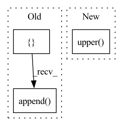

Pattern ID :9162

Before Change
import uuid
import datetime
import base64
generated = []
ii = random.randint(0, 4)
mask = "H"
if ii == 0:
generated.append(str(uuid.uuid4()))
mask = "U"
elif ii == 1:
generated.append(str(uuid.uuid4().hex))
mask = "H"
elif ii == 2:
c = random.randint(0, 3)
if c == 0:
generated.append(str(datetime.datetime.now().timestamp()))
elif c == 1:
generated.append(str(random.randint(0, 1000000)))
elif c == 2:
generated.append(str(random.randint(0, 999)) + "." + str(random.randint(0, 999)))
else:
generated.append(str(random.randint(0, 999)) + "." + str(random.randint(0, 9999)) + "." +
str(random.randint(0, 9999)))
mask = "N"
elif ii == 3:
N = random.randint(5, 20)
import string
message = [random.choice(string.ascii_uppercase + string.digits) for _ in
range(N)] // known_words[random.randint(0, len(known_words) - 1)]
message = "".join(message)
message_bytes = message.encode("ascii")
base64_bytes = base64.b64encode(message_bytes)
base64_message = base64_bytes.decode("ascii")
generated.append(base64_message)
elif ii == 4:
toks = []
for _ in range(4):
toks.append(str(random.randint(0, 255)))
generated.append(".".join(toks))
mask = "I"
return str(generated[0]), mask[0]
After Change
if i == 0:
message = message.lower()
elif i == 1:
message = message.upper()
generated = message
elif ii == 4:
toks = []
for _ in range(4):
In pattern: SUPERPATTERN
Frequency: 3
Non-data size: 3
Instances
Fragment ID: 33263019
Project Name: adobe/stringlifier
Commit Name: 5664ff9308b17be3b18b0a61331b5e36b8c995be
Time: 2020-08-24
Author: boros@adobe.com
File Name: stringlifier/modules/training.py
M Class Name: AnonimousClass
N Class Name: AnonimousClass
M Method Name: _generate_word(1)
N Method Name: _generate_word(1)
M Parent Class:
N Parent Class:
M File Name: stringlifier/modules/training.py
N File Name: stringlifier/modules/training.py
M Start Line: 24
M End Line: 61
N Start Line: 24
N End Line: 64
'>
Before Change
def metric(pred, true, metric_params=None):
if metric_params is None:
metric_params = ["mae", "mse", "rmse", "mape", "mspe"]
metrics = []
metrics_dict = {"mae": MAE, "mse": MSE, "rmse": RMSE, "mape": MAPE, "mspe": MSPE, "rse": RSE, "corr": CORR}
for p in metric_params:
metrics.append(metrics_dict[p](pred, true))
return metrics
After Change
metrics = dict()
metrics_dict = {"mae": MAE, "mse": MSE, "rmse": RMSE, "mape": MAPE, "mspe": MSPE, "rse": RSE, "corr": CORR}
for p in metric_params:
metrics[p.upper()] = metrics_dict[p](pred, true)
return metrics
'>
Fragment ID: 33263023
Project Name: btdlozc-sjtu/timeseriesresearch
Commit Name: 44302627739659ef4d15d160716fe086a2488647
Time: 2021-06-25
Author: ZChiEcho@gmail.com
File Name: utils/metrics.py
M Class Name: AnonimousClass
N Class Name: AnonimousClass
M Method Name: metric(3)
N Method Name: metric(3)
M Parent Class:
N Parent Class:
M File Name: utils/metrics.py
N File Name: utils/metrics.py
M Start Line: 31
M End Line: 34
N Start Line: 31
N End Line: 34
'>
Before Change
def metric(pred, true, metric_params=None):
if metric_params is None:
metric_params = ["mae", "mse", "rmse", "mape", "mspe"]
metrics = []
metrics_dict = {"mae": MAE, "mse": MSE, "rmse": RMSE, "mape": MAPE, "mspe": MSPE, "rse": RSE}
for p in metric_params:
metrics.append(metrics_dict[p](pred, true))
return metrics
After Change
for q in [0.1, 0.5, 0.9]:
metrics[f"QuantileLoss[{str(q)}]"] = metrics_dict[p](pred, true, q)
else:
metrics[p.upper()] = metrics_dict[p](pred, true)
return metrics
'>
Fragment ID: 33263022
Project Name: btdlozc-sjtu/timeseriesresearch
Commit Name: 44302627739659ef4d15d160716fe086a2488647
Time: 2021-06-25
Author: ZChiEcho@gmail.com
File Name: utils/metrics_proba.py
M Class Name: AnonimousClass
N Class Name: AnonimousClass
M Method Name: metric(3)
N Method Name: metric(3)
M Parent Class:
N Parent Class:
M File Name: utils/metrics_proba.py
N File Name: utils/metrics_proba.py
M Start Line: 37
M End Line: 40
N Start Line: 45
N End Line: 58